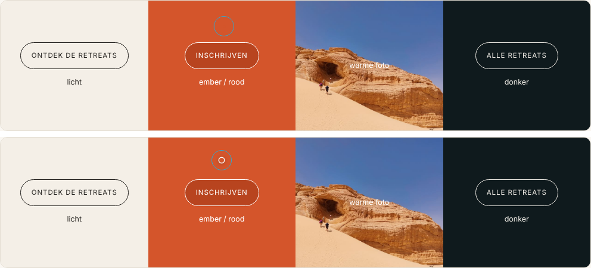
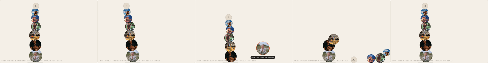

Feedback v3: wat er moet veranderen
Yoga, Zen & Tonic · 30 okt 2026 · nagekeken op de live site (yogazentonic.com), de Studio-code (main) en de gepubliceerde Sanity-inhoud.
code wijziging aan de website/Studio nodig · studio kan vandaag al zelf in de Studio · vraag keuze nodig van Rita & Philippe (alle keuzes zijn nu gemaakt)
| # | Feedback | Wat | Soort | Inschatting |
|---|---|---|---|---|
| 1 | Pointer beter leesbaar | Onze cursor blijft; stip 5 → 8 px met witte rand + schaduw (halo), zodat hij niet meer verdwijnt op rood/foto | code | klein (1 u) |
| 2 | 7 samenwerkingen, Raf & Sol | Geen limiet. Echte oorzaak: het “+” zit verstopt in het ⋯-menu → zichtbare +-knop + rij “+ Nieuwe samenwerking” | code studio | klein (1–2 u) |
| 3 | Voorbije retreats zonder prijs | Op de terugblik-pagina enkel Waar, Begeleiding & Deelnemers; prijs ook uit Google-beschrijving & JSON-LD | code | klein (1–2 u) |
| 4 | Testimonials & reviews | Samenvoegen tot één document Testimonial met vinkje “Op Home” + tabel met alle testimonials (vinkje in kolom 1) + migratie | code | 1–1,5 dag |
| 5 | Foto's Instagram-blok | Nu = de 6 nieuwste “Uitgelichte” foto's. Eigen keuzeveld op Home toevoegen | code | klein (2–3 u) |
| 6 | Yogamat-symbool | Nieuwe, langwerpige SVG (voorstel hieronder) | code | klein (1 u) |
| 7 | Tarieven privélessen | Privéles-blok uitbreiden met prijslijst + “Locatie & praktisch” | code | middel (½ dag) |
| 8 | SEO: retreats, events, yoga-aanbod | Retreats = Event ✓. Ontbreekt: wat Y,Z&T aanbiedt (Service/aanbod, regio, oprichters), JSON-LD op Lessen, landcodes | code studio | ½ dag |
| 9 | Privéles in de navigatie | Link “Privéles →” in het Lessen-menu (desktop) + chip (mobiel) | code | klein (1 u) |
| 10 | Samenwerkingen als balanstoren | Portretten als steentoren in evenwicht: wiebelen, stenen verplaatsen, omvallen & heropbouwen, klik = kaart. Schakelaar in de Studio: Balanstoren / Klassiek | code | 1–1,5 dag |
1 · Pointer: onze cursor houden, maar beter leesbaar
Pointer toch niet ideaal, liefst als het kan zoals bij https://www.sansararesort.com/
Beslissing: de Sansara-cursor nemen we niet over. Onze cirkel-en-stip blijft (ring die mee-ijlt, groot boven links/foto's, klik-veer). Het echte probleem is leesbaarheid: de stip is klein en verdwijnt op sommige achtergronden.
Waarom de stip “verdwijnt”
app/globals.css:458-462: de ring heeft mix-blend-mode: difference en past zich dus aan de achtergrond aan (wit op donker, donker op licht). De stip doet dat bewust níet: die is altijd var(--ember) (#D4552B), 5 × 5 px, zonder rand of schaduw. Op een rode/oranje knop, een ember-label of een warme foto (zonsondergang, woestijn) heeft hij dus geen contrast meer. Het kleurwisselen dat je bij de ring ziet, gebeurt bij de stip nooit.
Voorstel: grotere stip met halo
- Stip 5 → 8 px, nog altijd ember.
- Halo eronder: een witte rand van 1,5 px + een zachte schaduw:
box-shadow: 0 0 0 1.5px rgba(255,255,255,.95), 0 1px 6px rgba(15,26,29,.45). De witte rand geeft contrast op rood en donker, de schaduw op wit en licht. Daardoor lijkt de stip ook iets “boven” de pagina te zweven. - Boven links/foto's (ring groot): stip iets kleiner (
scale: .75), zodat de ring de aandacht krijgt. Bij klikken: stip kort ×1,3. - Ring: ongewijzigd (difference-blend werkt goed), eventueel 1 → 1,25 px dik.
Vergelijk: nu ↔ voorstel
Beweeg de muis over de 4 vlakken (desktop). Wissel met de knop.

Wijzigingen code
app/globals.css:460.cursor-dot:width/height: 8px; margin: -4px 0 0 -4px;+ debox-shadowhierboven;transition: scale .2s var(--ease).app/globals.css: nieuwe regels.cursor-dot.big { scale: .75 },.cursor-dot.press { scale: 1.3 }.components/Cursor.tsx: de classesbig/pressook op de stip zetten (nu enkel op de ring). Verder niets.
Ter referentie: de Sansara-cursor (niet gekozen)
Gemaakt op sansararesort.com (1440 px breed, pop-ups weggehaald). De zwarte pijl is de gewone muispijl; die verschijnt niet in een screenshot, dus heb ik hem op de exacte muispositie ingetekend.


white).2 · Samenwerkingen: 7, met Raf & Sol
Mensen met wie we samenwerkten: kunnen we er 7 hebben? Raf en Sol erbij? Hoe mensen verwijderen indien nodig?
Ja, er is geen maximum. Over ons toont automatisch elke gepubliceerde Persoon met Soort “Samenwerking” die niet verborgen is (sanity/queries.ts:344).
| Nu gepubliceerd (live) | Status |
|---|---|
| Elena, Fatim, Foodie Jive, Mel, Michèle | zichtbaar |
| Sol | staat er al (zichtbaar op Over ons) |
| Raf | bestaat niet als gepubliceerde persoon → nog aanmaken (of een concept staat nog niet op “Publiceren”) |
Met Raf erbij = 7. Beslist: 3 kolommen op brede schermen (≥ 1100 px), 2 op tablet, 1 op gsm: app/globals.css:301 (.collabs) → grid-template-columns: repeat(3, 1fr) + media queries. Geldt voor de klassieke weergave (zie #10).
De echte oorzaak: het “+” staat verstopt code
Het probleem was niet het aantal, maar dat het niet duidelijk was hoe je iemand toevoegt. In de Studio bouwen de panelen Over ons, Lessen, Mails en Formulieren hun lijst zelf op (liveList in studio/structure/index.ts:64-100). De knop “Nieuwe persoon” staat daar als menuItem zonder showAsAction. In Sanity (gecontroleerd in de broncode van sanity@6: renderAsButton: item.showAsAction ?? false) betekent dat dat hij niet als knop verschijnt, maar verstopt zit in het ⋯-menu rechtsboven. Bij lijsten zoals “Nieuwsbrieven” staat er wel een zichtbaar +, vandaar de verwarring.
studio/structure/index.ts:87:S.menuItem()…showAsAction(true)→ in elk van die panelen een zichtbare +-knop met de titel als tooltip (“Nieuwe samenwerking”, “Nieuwe stijl”…). Eén regel, geldt voor alle 4 panelen.- Bovenaan de lijst ook een gewone rij “+ Nieuwe samenwerking” (een
S.listItem()metAddIconen een create-intent met beginwaarde Soort = Samenwerking), zodat het ook zonder de knop rechtsboven te vinden is. Zelfde voor “+ Nieuwe stijl”, “+ Nieuwe studio”. - Titel “Nieuwe persoon” → “Nieuwe samenwerking” (met beginwaarde
kind: "collaborator"via eeninitialValueTemplate), zodat Rita & Philippe niet per ongeluk een tweede “founder” aanmaken. studio/components/Help.tsx(“Zo werkt het”): kort blok “Iets toevoegen = het + bovenaan de lijst”, met een screenshot.
Ontbreekt het “+” ook elders? Controle van het hele Studio-menu
| Menu | Nieuw document maken | Status |
|---|---|---|
| Over ons (Samenwerkingen, Rita & Philippe) | “Nieuwe persoon” | verstopt in ⋯ |
| Lessen (Stijlen, Studio's) | “Nieuwe stijl”, “Nieuwe studio” | verstopt in ⋯ |
| Mails (Bevestigingsmails) | “Nieuwe bevestigingsmail” | verstopt in ⋯ |
| Formulieren (Inschrijfformulieren) | “Nieuw formulier” | verstopt in ⋯ |
| Retreats | klein +-icoontje zonder tekst rechts van de filterchips (studio/components/RetreatList.tsx:116-123) | zichtbaar, maar makkelijk te missen → knop met tekst “Nieuwe retreat” |
| Nieuwsbrieven, Testimonials | standaard Sanity-lijst met + bovenaan | zichtbaar |
| Fotobank | knop “Foto's uploaden” | zichtbaar |
| Contactboek | knoppen “Toevoegen” + “CSV importeren” | zichtbaar |
| Inschrijvingen, Contactformulier, Reviews | geen: die komen binnen via de site | niet nodig (bij #4: “+ Nieuwe testimonial”) |
| Pagina's (Home, Algemeen, Gallery, FAQ, Contact, Menu & footer), Juridisch | geen: er bestaat er telkens precies één | niet nodig |
Eén lijn code in liveList lost de 4 rode rijen op. Daarnaast: Retreats een knop met tekst, en overal dezelfde vorm: een +-knop rechtsboven én een rij “+ Nieuwe …” bovenaan de lijst. Het algemene “+ Maken” linksboven in de Studio blijft ook werken, maar toont alle soorten door elkaar; daarom liever vanuit het juiste menu.
Raf toevoegen studio
- Studio → Over ons → rechtsboven het ⋯-menu → Nieuwe persoon (na de fix hierboven: de zichtbare +-knop of de rij “+ Nieuwe samenwerking”).
- Soort: Samenwerking. Vul Naam, Rol (NL + EN) en Portret in (verplicht), optioneel “Over”, Website, Andere links.
- Optioneel Volgorde: laag getal = eerst. Leeg = alfabetisch na de genummerde.
- Klik Publiceren (onderaan rechts). Pas dan staat Raf op de site.
Iemand weghalen studio
- Aanbevolen: “Verbergen op Over ons” aanzetten (schakelaar onderaan de persoon) → Publiceren. De persoon verdwijnt van Over ons, maar blijft als begeleider op oude retreatpagina's staan. Later terugzetten = schakelaar uit.
- Definitief: in de persoon ⋯-menu → Verwijderen. Lukt niet zolang die persoon bij een retreat onder “Begeleiding” staat; de Studio toont dan waar. Eerst daar weghalen.
Optioneel code: de uitleg “Verbergen = weg van Over ons, Verwijderen = overal weg” in “Zo werkt het” (studio/components/Help.tsx) zetten, zodat het niet opnieuw gevraagd wordt.
3 · Voorbije retreats: geen prijs meer (Waar · Begeleiding · Deelnemers)
Bij 'voorbije retreats', willen we enkel de kopjes Waar en Begeleiding op website. Om de prijs er af te krijgen. Liefst vermijden om de prijs weg te doen uit studio, en niet enkel onderaan bij het kopje 'achteraf'.
De terugblik-pagina van een voorbije retreat toont nu 4 feiten naast “In een notendop”: Waar · Begeleiding · Prijs (vanaf €…) · Deelnemers (app/[lang]/retreats/[slug]/page.tsx:161-175). De prijs komt uit “Prijs vanaf” of de laagste prijs uit Praktisch.
Oplossing in de code, niets weghalen in de Studio: de prijs blijft bewaard (handig als je de retreat opnieuw organiseert), de site toont hem gewoon niet meer zodra de einddatum voorbij is.
Wijzigingen code
app/[lang]/retreats/[slug]/page.tsx:161-175:priceen de rijt.priceuitfactshalen →[t.where, …],[t.hosts, …],[t.participants, …].app/[lang]/retreats/[slug]/page.tsx:56-62(generateMetadata): “vanaf € …” enkel in de Google-/deelbeschrijving zetten als de retreat nog komt.lib/jsonld.ts:131: geenoffers(prijs voor Google) meer voor voorbije retreats.- Kaartjes bij “Voorbij” op /retreats en het menu tonen al geen prijs (
components/sections.tsx:138-143, enkel “12 deelnemers”) → niets te doen. - Studio-uitleg bijwerken: “Prijs vanaf” (
studio/schemaTypes/documents/retreat.ts:142-149) → “Niet getoond bij een voorbije retreat”; groepsuitleg bovenaan (:22).
Beslist: “Deelnemers” blijft op de terugblik-pagina én op het kaartje bij “Voorbij” (“12 deelnemers”): het zegt iets over de sfeer en is geen prijsinfo. Enkel de prijs verdwijnt.
4 · Testimonials & reviews → één document “Testimonial”
Ik snap niet goed hoe de 'testimonials' en de 'reviews' werken; Waar kan je die toevoegen in de studio? Ik voeg er toe, maar ze komen niet tevoorschijn.
Beslissing: reviews en testimonials zijn hetzelfde, één keer via het formulier en één keer met de hand ingevuld. We maken er één soort document van: Testimonial. Per testimonial zet je zelf een vinkje “Op Home”, en er komt een tabel met alle testimonials, met dat vinkje in de eerste kolom.
Waarom het nu verwarrend is
| Review (nu) | Testimonial (nu) | |
|---|---|---|
| Hoe binnen | Formulier op /retreats/<slug>/review → privé reviewSubmission (met e-mail) → status “Gepubliceerd” maakt een publieke kopie review (studio/structure/views.tsx:38-67) | Met de hand: Inhoud → Testimonials |
| Waar in Studio | Contact → Reviews | Inhoud → Testimonials (los van Reviews) |
| Op Home? | Vanzelf bij 4★+ (sanity/queries.ts:202), geen keuze | Enkel als je hem ook kiest in Home → tab Testimonials (home-page.ts:59-67), en dat is nu leeg → “komt niet tevoorschijn” |
| Op retreatpagina? | Ja | Nee |
| Sterren / taal | Score verplicht, 1 taal | Geen score, NL/EN |
De testimonial uit de link heet ook nog “[Naam]”, en Hilde staat er twee keer in (als review én als testimonial, bijna dezelfde tekst). De migratie hieronder lost dat mee op.
Nieuw model
Testimonial (publiek, staat op de site)
- Op Home: schakelaar (formulier: standaard aan bij 4★+, met de hand: standaard aan)
- Op de retreatpagina: schakelaar, standaard aan (enkel als er een retreat gekozen is)
- Naam · Tekst (NL/EN; de andere taal valt terug op het origineel, of vertalen met AI)
- Score 1–5, optioneel (geen score = geen sterren, telt niet mee in het gemiddelde)
- Retreat (optioneel) of Andere context (bv. “Lessen”)
- Bron: “Formulier” / “Zelf toegevoegd” (alleen-lezen)
- Datum, Taal, optioneel Volgorde op Home
Inzending (privé, blijft)
- Wat het formulier binnenstuurt, met e-mail. Blijft een apart privé-document (id met punt,
reviewSubmission.<uuid>), omdat de dataset publiek leesbaar is: een e-mail mag nooit in een publiek document staan. - Status Nieuw / Gepubliceerd / Geweigerd zoals nu. “Gepubliceerd” maakt of herstelt de Testimonial
testimonial-<uuid>met Bron = Formulier. Wie zelf iets toevoegt, maakt meteen een Testimonial, zonder inzending. - Interne naam
reviewSubmissionmag blijven (contactboek, revalidate, formulieren werken er al mee); alleen de titel in de Studio wordt “Testimonial (inzending)”.
Studio: menu en tabel
Contact → Testimonials (vervangt “Reviews” én Inhoud → Testimonials). Bovenaan de rij Tabel, daaronder de lijst per status (Nieuwe inzendingen · Op Home · Alle), met de knop + Nieuwe testimonial.
| Op Home | Naam | Score | Tekst | Retreat / context | Bron | Status | Taal | Datum | |
|---|---|---|---|---|---|---|---|---|---|
| Nathalie | ★★★★★ | Ongelooflijk positieve en aangename sfeer. Een week later… | Eifel 2026 | Formulier | Gepubliceerd | NL | — | n…@… | |
| Hilde | ★★★★★ | Zo genoten van de ongedwongenheid. En de vele mooie… | Spa 2025 | Formulier | Gepubliceerd | NL | 24 okt 2026 | h…@… | |
| [Naam] | — | Ik kwam voor de yoga en ging naar huis met een nieuwe vriendengroep. | Spa 2025 | Zelf toegevoegd | Online | NL/EN | 4 okt 2026 | — | |
| (nieuwe inzending) | ★★★★☆ | … | Eifel 2026 | Formulier | Nieuw | NL | — | … |
- Eerste kolom: vinkje “Op Home”, werkt meteen (patch op de Testimonial, de site wordt opnieuw opgebouwd). Grijs zolang een inzending nog niet gepubliceerd is.
- Klik op een rij → het document openen. Filters: retreat, bron, status, “enkel op Home”. Knop “Exporteer CSV” zoals bij Inschrijvingen. De e-mail is enkel zichtbaar in de Studio.
- Bouw: nieuw component
studio/components/TestimonialTable.tsxnaar het voorbeeld vanSignupTable.tsx(zelfde Sanity UI, filters, export). Eén query overtestimonial+reviewSubmission, gekoppeld via de uuid.
Wijzigingen code
studio/schemaTypes/documents/testimonial.ts: veldenshowOnHome,showOnRetreat,rating(optioneel),source,lang,date,orderRank; preview met sterren + “Home”-badge; placeholder “[Naam]” blokkeren.studio/schemaTypes/documents/review.ts: publiek typereviewweg;reviewSubmissionkrijgt titel “Testimonial (inzending)”.studio/schemaTypes/index.tsbijwerken.studio/structure/views.tsx:38-67: “Gepubliceerd” maakt eentestimonial(testimonial-<uuid>,source: "form",showOnHome: rating >= 4, tekst in het taalvak van de inzending). Bewerkingen blijven bewaard bij opnieuw publiceren, zoals nu.studio/structure/index.ts:224-236+:311: één menu Contact → Testimonials met Tabel bovenaan; los item onder Inhoud weg. Teller-badge blijft op nieuwe inzendingen.studio/schemaTypes/singletons/home-page.ts:20,59-67: keuzelijsttestimonialsweg (enkel de kop blijft), overzicht: “Testimonials met ‘Op Home’ aan”.sanity/queries.ts:107-123, 201-202, 280-284: één projectieTESTIMONIAL(naam, tekst, score, context); Home =*[_type=="testimonial" && showOnHome==true] | order(coalesce(orderRank,1000), date desc)[0...12]; retreatpagina + eerdere edities =showOnRetreat != false.app/[lang]/page.tsx:40-50: samenvoegen van twee lijsten weg;components/sections.tsx:229-270(ReviewList): sterren en gemiddelde enkel over wie een score heeft.app/api/revalidate/route.ts,lib/receipt.ts,studio/components/Help.tsx, “Nog in te vullen”: namen/uitleg bijwerken;sanity/types.tsopnieuw genereren.- Migratie
studio/scripts/migrate-testimonials.ts(eenmalig, met dry-run): de 2review-documenten →testimonial-<uuid>(Bron Formulier, Op Home aan); de 2 oude testimonials krijgen Bron “Zelf toegevoegd”; dubbele Hilde samenvoegen (die met score houden); verwijzingen inhomePage.testimonialsopruimen; daarna dereview-documenten weg. - De publieke URL
/retreats/<slug>/reviewblijft (er zijn al links verstuurd); het formulier mag als kop “Laat een testimonial achter” krijgen.
Inschatting: 1–1,5 dag (schema + migratie + tabel + queries).
Beslist: op de site Nederlands “Wat deelnemers zeggen”, geen Engels “Reviews” meer. Nu staat er op de retreatpagina een klein label “Reviews” boven de kop “Wat deelnemers zeggen”, en “Reviews” in de inhoudstafel. lib/dictionary.ts:259 (review.label) en :113 (toc.reviews) → “Wat deelnemers zeggen” (label) en kop bv. “Zo was het voor hen”, of het label weglaten en enkel de kop houden. Op Home is de kop al “Wat deelnemers zeggen”. Het reviewformulier krijgt als kop “Vertel hoe het was”. Engels blijft “What participants say”.
5 · Foto's in het Instagram-blok onderaan Home
Hoe kan ik de foto's wijzigen onderaan bij Instagram sectie?
Nu: het blok toont automatisch de 6 nieuwst geüploade foto's met “Uitgelicht” aan uit de Fotobank (sanity/queries.ts:200). Er staan 16 foto's op Uitgelicht, dus enkel de 6 recentst geüploade komen in beeld. “Uitgelicht” betekent ook: een grote tegel op de Gallery-pagina (studio/schemaTypes/documents/media-item.ts:47).
Vandaag studio: Fotobank → foto openen → “Uitgelicht” aan/uit → Publiceren. Omslachtig (je moet er 10 uitzetten om een oudere foto erin te krijgen, en dat verandert ook de Gallery). Het blok staat ook nergens in de Home-tabs, vandaar dat het niet te vinden is.
Wijzigingen code
studio/schemaTypes/singletons/home-page.ts: nieuwe tab Instagram met veld “Foto's Instagram-blok” (lijst met foto's uit de Fotobank, max. 6, sleepbaar voor de volgorde, met de bestaande foto-kiezerstudio/components/PhotoPicker.tsx) + regel in het Home-overzicht (SECTIONS).sanity/queries.ts:200:"instagram": coalesce(instagramPhotos[]->…, *[_type=="mediaItem" && highlight==true]…[0...6])→ eigen keuze, anders zoals nu.studio/schemaTypes/documents/media-item.ts:47: uitleg “Uitgelicht” bijwerken (Instagram enkel als Home → Instagram leeg is).sanity/types.tsopnieuw genereren (typegen).
6 · Yogamat-symbool bij Rita
Grafisch symbooltje bij rita van yoga mat is niet zo stilistisch. Lijkt nog te veel op rol WC papier. Maak langwerpiger en betere SVG.
Het symbool staat op Over ons boven Rita's portret (hover toont de foto). Nu: korte, dikke rol (± 1,7 : 1) met grote spiraal en een afgerold stuk ervoor → leest als WC-rol/keukenrol. Voorstel: lange, slanke rol (± 4 : 1), kleine ovale kop met fijne spiraal, twee banden en een draagriem erover: dat maakt meteen duidelijk dat het een yogamat is.
Wijziging code
components/icons.tsx:31-43 (YogaMat) vervangen door (zelfde lijnstijl 1,2 px, viewBox iets platter zodat de mat breder in beeld komt):
export const YogaMat = () => (
<svg viewBox="0 0 100 56" aria-hidden="true" strokeLinejoin="round" strokeLinecap="round">
{/* a long rolled-up mat on its side: the spiral end, two straps, a carry strap over the top */}
<ellipse cx="10" cy="36" rx="4.6" ry="11" />
<path d="M10 25 H88 A4.6 11 0 0 1 88 47 H10" />
<path d="M10 34.9 10.1 34.8 10.2 34.8 10.2 34.8 10.3 34.8 10.4 34.9 10.5 35 10.6 35.1 10.7 35.3 10.8 35.6 10.8 35.8 10.9 36.1 10.9 36.5 10.9 36.8 10.9 37.1 10.8 37.5 10.7 37.8 10.6 38.1 10.5 38.4 10.4 38.7 10.2 38.9 10 39 9.8 39.1 9.6 39.1 9.4 39 9.2 38.8 9.1 38.6 8.9 38.3 8.7 37.9 8.6 37.5 8.5 37 8.4 36.4 8.3 35.8 8.3 35.2 8.4 34.6 8.4 34 8.5 33.4 8.7 32.9 8.9 32.4 9.1 31.9 9.3 31.6 9.6 31.3 9.9 31.1 10.2 31.1 10.5 31.1 10.8 31.3 11.1 31.5 11.4 31.9 11.7 32.4 11.9 33 12.1 33.7 12.3 34.4 12.4 35.2 12.5 36.1 12.5 37 12.4 37.9 12.3 38.7 12.1 39.6 11.9 40.4 11.6 41.1 11.3 41.7 11 42.2 10.6 42.5 10.2 42.8 9.8 42.8 9.3 42.8 8.9 42.5 8.5 42.2 8.1 41.6 7.8 41 7.4 40.2 7.2 39.3 7 38.3 6.8 37.2 6.8 36 6.8 34.9 6.8 33.7 7 32.6 7.2 31.5 7.5 30.5 7.8 29.6 8.2 28.8 8.7 28.2 9.1 27.7 9.7 27.4 10.2 27.3 10.8 27.3 11.3 27.6 11.8 28.1 12.3 28.8 12.8 29.6 13.2 30.6 13.5 31.7 13.8 33 13.9 34.3 14 35.7 14 37.2 14 38.6 13.8 40 13.5 41.4 13.2 42.6 12.8 43.7 12.3 44.7 11.7 45.5 11.1 46.1 10.5 46.5 9.8 46.6 9.2 46.6 8.5 46.2 7.9 45.7 7.3 44.9" />
<path d="M24.4 25 A4.6 11 0 0 1 24.4 47 M27.6 25 A4.6 11 0 0 1 27.6 47 M70.4 25 A4.6 11 0 0 1 70.4 47 M73.6 25 A4.6 11 0 0 1 73.6 47" />
<path d="M27 25 C38 11 60 11 71 25" />
<path d="M29.2 25 C39 14 59 14 68.8 25" />
</svg>
);Alternatief studio: bij Rita (Over ons → Rita) kan je in het veld Voorwerp een eigen foto zetten (bv. haar opgerolde mat); dan wordt die getoond i.p.v. de tekening.
7 · Tarieven privélessen
Ik zou nog graag weten hoe ik voor de privelessen al deze info toevoeg: Tarieven Privélessen · Prijzen per persoon (1-op-1 € 75, Duet € 45 p.p., Trio € 35 p.p.) · Locatie & Praktisch (Waar, Vervoer)
Nu: Studio → Lessen → Lessen-pagina → tab Privéles heeft enkel Kop, Tekst (max. 300 tekens), Praktisch (1 grijze regel, max. 80 tekens), Foto en Knop (studio/schemaTypes/singletons/lessons-page.ts:89-102). Live staat: “60 min · prijs 70€ · Mortsel of bij jou thuis (prijs is excl. verplaatsingskosten)”. Een prijslijst met 3 regels + Waar/Vervoer past daar niet in → er moeten velden bij.
Voorstel: zo ziet het blok eruit
Tarieven privélessen
Wil je persoonlijke begeleiding op maat, alleen of in een klein groepje?
Prijzen per persoon
- Privéles (1-op-1)€ 75
- Duet (2 personen)€ 45 p.p.
- Trio (3 personen)€ 35 p.p.
Locatie & praktisch
- Waar
- In Mortsel of bij jou thuis (binnen een straal van 10 km).
- Vervoer
- Bij lessen op locatie worden eventuele vervoersonkosten apart verrekend.
Contacteer Rita
Wijzigingen code
studio/schemaTypes/singletons/lessons-page.ts:89-102(objectprivate) uitbreiden met:ratesTitle(NL/EN, “Prijzen per persoon”)rates[]: per regel Omschrijving (NL/EN, bv. “Duet (2 personen)”), Bedrag (€), schakelaar “per persoon” (→ “p.p.” / “pp”)detailsTitle(NL/EN, “Locatie & praktisch”)details[]: per regel Kopje (Waar, Vervoer…) + Tekst (NL/EN)- het oude veld “Praktisch” blijft als optionele korte regel (bv. “60 min”), of verbergen als het leeg is
sanity/queries.ts:306: nieuwe velden mee ophalen (mett()voor NL/EN).app/[lang]/lessen/page.tsx:222-254: prijslijst + Waar/Vervoer tonen onder de tekst, zelfde stijl als “Praktisch” op de retreatpagina; bedragen viaeuro()(lib/format.ts).lib/dictionary.ts: standaardkoppen NL/EN (“Prijzen per persoon” / “Prices per person”, “Locatie & praktisch” / “Location & practical”, “p.p.” / “pp”).- Optioneel: JSON-LD
Offers voor de privélessen (Google),lib/jsonld.ts. sanity/types.tsopnieuw genereren; Lessen-overzicht in de Studio (vinkjes per blok) aanvullen.
Daarna invullen studio: Lessen → Lessen-pagina → tab Privéles → Kop “Tarieven privélessen”, Tekst = de introzin, 3 prijsregels, 2 praktische regels → Vertalen (AI) voor EN → Publiceren.
8 · SEO: begrijpt Google dat dit retreats/events zijn, en dat Yoga, Zen & Tonic yoga aanbiedt?
Kort: de retreatpagina's zijn al goed (Google ziet ze als Event). Wat ontbreekt: Google weet nergens wat Yoga, Zen & Tonic doet (yoga, lessen, privéles, regio Antwerpen). Dat staat enkel in de tekst, niet in de gestructureerde data. Gecontroleerd op de live pagina's.
Wat al goed zit ✓
| Pagina | Wat Google krijgt |
|---|---|
| Retreatpagina's (komend én voorbij) | JSON-LD Event (naam, data, plaats + verblijf, organisator = Yoga, Zen & Tonic, begeleiders als performer, foto, prijs + volzet/beschikbaar) + BreadcrumbList (lib/jsonld.ts:73-145). Eigen title & description per retreat, canonical, NL/EN-hreflang, eigen deelafbeelding. |
| Home | Organization + WebSite (naam, logo, e-mail, telefoon, Instagram/Facebook). |
| Sitemap / robots | Alle pagina's in NL + EN, met hreflang en laatste wijziging; Studio en API uitgesloten. |
Reviewformulier /retreats/<slug>/review | Terecht noindex: het is enkel een formulier. De reviews zelf staan op de (geïndexeerde) retreatpagina. |
Wat beter kan code
| # | Probleem | Oplossing | Belang |
|---|---|---|---|
| a | Geen “wat doen we”: Organization heeft geen aanbod, geen adres/regio, geen oprichters. | organizationLd uitbreiden: knowsAbout (Yoga, Pilates, Meditatie, Freediving), areaServed (Antwerpen, Mortsel), founder (Rita, Philippe als Person), hasOfferCatalog met 3 Services: “Yogaretreats”, “Yoga- en Pilateslessen”, “Privéles yoga & Pilates”. En deze Organization op elke pagina meesturen (nu enkel Home), zodat de organisator van een Event volledig is. | hoog |
| b | Lessen-pagina zonder gestructureerde data, H1 is gewoon “Lessen”. | app/[lang]/lessen/page.tsx: JSON-LD Service per stijl (Ashtanga, Vinyasa, Pilates Mat/Reformer, provider = Organization, areaServed Antwerpen) + Service “Privéles” met Offers (€ 75 / € 45 / € 35 p.p., zie #7). Openingstitel bv. “Yoga- & Pilateslessen in Antwerpen” (in de Studio: Lessen-pagina → Openingsbeeld). | hoog |
| c | Land als tekst: addressCountry: "Egypte", "België"; plaats “Ardense bossen · Spa”. | ISO-code meesturen (EG, BE): veld “Landcode” of een vaste lijst in retreat.ts; addressLocality = enkel de plaats (“Spa”), de omschrijving naar location.name. | middel |
| d | Event-type te algemeen + geen taal. | Event blijft het juiste type (er is geen “Retreat” in schema.org), maar voeg about/keywords (“yoga retreat”, “freediving”), inLanguage en organizer.logo toe. Bij voorbije retreats: geen offers (zie #3). | laag–middel |
| e | Titel ≠ openingstitel bij voorbije retreats: title “Spa: Yoga & Hike”, H1 “Ardennen: Yoga & Spa”. | Inhoud: in de Studio dezelfde naam gebruiken (retreat → Titel en Openingsbeeld → Titel). Eventueel waarschuwing in de Studio als ze verschillen. | middel studio |
| f | Slug “Rochefort” met hoofdletter en zonder jaar (de andere: eifel-2026). | In de Studio wijzigen naar rochefort-2027 (nu het nog niet gedeeld is) + slug-validatie “kleine letters, met jaar”. | middel studio |
| g | Over ons: Rita & Philippe niet als Person. | JSON-LD Person voor beiden (jobTitle, worksFor, sameAs Instagram) op Over ons. | laag |
| h | Sterren in Google? | Niet doen: Google toont geen review-sterren voor Events, en reviews die een organisatie over zichzelf op de eigen site zet, komen sinds 2019 ook niet in aanmerking. Een AggregateRating heeft dus geen zin. | niet nodig |
Daarna controleren met de Rich Results Test en in Search Console (sitemap indienen, Event-rapport).
9 · Privéles in de navigatie
Ja, dat is logisch: het blok staat onderaan de Lessen-pagina (#prive) en is nu enkel te vinden door helemaal te scrollen. Twee plaatsen in components/Nav.tsx:
- Desktop-menu “Lessen” (
Nav.tsx:147-162): in de onderste balk naast “📍 studio's” en “Weekplanning →” een derde link “Privéles →” naarhref(lang, "lessons", { hash: "prive" }). Alternatief: een 5e kaart naast de stijlen met icoonpeopleen de korte tekst uit de Studio. Voorstel: link in de balk, zodat het raster van 4 stijlen blijft. - Mobiel menu (
Nav.tsx:197-205,subs): chip “Privéles” na “Studio's”. - Enkel tonen als het blok bestaat:
hasPrivate: defined(*[_id=="lessonsPage"][0].private.title)inSETTINGS_QUERY(sanity/queries.ts), zoals bij de studio's. lib/dictionary.ts:chips.private“Privéles” / “Private class”. Optioneel ook in de footer onder Aanbod.
10 · Samenwerkingen als balanstoren (met schakelaar naar klassiek)
Een knipoog naar yoga: geen losse, willekeurig botsende deeltjes, maar de ronde portretten als een gestapelde steentoren in evenwicht (een cairn, zoals op het strand of bij een tree pose). De interactie gaat dan over balans: aanraken laat de toren wiebelen, er een steen uit trekken laat de rest zakken, te hard duwen laat hem omvallen, en hij bouwt zichzelf rustig weer op. Zo heeft de interactie een betekenis. De klassieke weergave (de huidige lijst) blijft bestaan, en Rita & Philippe kiezen in de Studio welke ze tonen.
(zelfde schakelaar als in de Studio)

Gedrag
- Opbouw: grootste portret onderaan, kleiner naar boven (7 personen: Ø ±150 → 70 px), elke steen iets verschoven en licht overlappend, zodat het een echte, net-niet-perfecte stapel is. De volgorde volgt het Studio-veld Volgorde (laag = onderaan), anders de grootte op alfabet.
- Rust: de toren “ademt”: een heel trage, kleine zwaai (± 0,5°), zoals iemand in balans staat.
- Hover: de steen onder de muis groeit iets en krijgt een ember-rand + label (naam · rol); de muisbeweging geeft de toren een zetje in die richting (hoe hoger je raakt, hoe meer hij zwaait) en hij veert terug.
- Slepen: een steen uit de toren trekken → de stenen erboven zakken en de toren zoekt opnieuw balans. Loslaten boven/naast de toren = op die plaats terugzetten (de volgorde verandert enkel voor de bezoeker); ver weg loslaten = hij rolt terug naar zijn plaats.
- Omvallen: hard duwen of gooien → de toren valt om, de stenen rollen over de bodem, en na ±2 s bouwen ze zichzelf weer op, één voor één van onder naar boven.
- Klik (zonder slepen): kaart met groot portret, naam, rol, bio en links (desktop rechts, mobiel als bottom sheet). Esc/× sluit. Ankers (
#elena) openen meteen de juiste kaart. - Veel mensen (> 8): twee torens naast elkaar. Mobiel: toren geschaald, tikken = kaart, wiebelen met de vinger.
Schakelaar in de Studio code
studio/schemaTypes/singletons/about-page.ts(bij “Samenwerkingen”): veld “Weergave samenwerkingen” (collaboratorsStyle, radio): “Balanstoren (speels)” / “Klassiek (lijst)”, standaard Balanstoren, met uitleg “Klassiek = de vaste lijst met foto, rol, tekst en links”.sanity/queries.ts:341-344(ABOUT_QUERY):collaboratorsStylemee ophalen;sanity/types.tsopnieuw genereren.app/[lang]/over-ons/page.tsx:103-140:collaboratorsStyle === "classic"→ de huidige<ul className="collabs">(ongewijzigd); anders<CollabTower people={…} />+ dezelfde lijst als gewone HTML eronder, visueel verborgen (.sr-only), zodat Google en schermlezers alles blijven lezen en het zonder JavaScript gewoon de lijst is.- Beslist: wie in zijn systeem “minder beweging” aanzet (
prefers-reduced-motion), krijgt automatisch de klassieke lijst, ook als in de Studio Balanstoren gekozen is. Gebeurt in CSS/JS aan de kant van de browser: de toren wordt niet geladen en de lijst wordt gewoon zichtbaar.
Bouw code
- Nieuw client-component
components/CollabTower.tsx, geen library nodig: elke steen heeft een rustplaats in de toren; de toren draait rond zijn voet met één zwaaihoek (veer + demping), elke steen heeft een eigen kleine veer naar zijn plaats; bij omvallen eenvoudige zwaartekracht + botsingen (cirkel/cirkel, bodem, randen) en daarna één voor één terug naar hun plaats. ± 200 regels,requestAnimationFrame, pauzeert buiten beeld. - Portretten als
<button>-elementen mettransform(geen canvas), zodat Tab, focusring, Enter → kaart, alt-teksten en de cursor (#1, ring groot boven een steen) gewoon werken. Het canvas in het prototype is enkel om het snel te tonen. - Kaart:
Photo+RichTexthergebruiken; stijl naast.collabsinapp/globals.css. - Inschatting: 1–1,5 dag (toren + omvallen/heropbouw + mobiel + Studio-schakelaar).
Volgorde van uitvoeren
- Zelf in de Studio, nu: Raf aanmaken (#2), slug
Rochefort→rochefort-2027en titels gelijktrekken (#8e–f). - Snelle code: zichtbaar “+” in de Studio (#2), cursor-halo (#1), prijs weg bij voorbije retreats (#3), nieuwe yogamat (#6), Privéles in het menu (#9).
- Nieuwe Studio-velden: privélessen (#7), Instagram-keuze (#5).
- Grotere stukken: Testimonials samenvoegen + tabel + migratie (#4), SEO-aanbod/JSON-LD (#8, samen met #7 voor de prijzen), balanstoren + schakelaar (#10).
Beslist: #1 onze cursor + halo · #2 3 kolommen · #3 Deelnemers blijft, prijs weg · #4 één “Testimonial”, op de site “Wat deelnemers zeggen” · #10 balanstoren, klassiek via de Studio-schakelaar en automatisch bij “minder beweging”. Geen open vragen meer.